<div class="divView text-center">
  <div class="stickyPanel">
    <p class="titleDish">YOUR DISH</p>
    <hr>
    <div class="dishView">
        <div class="divFoto" *ngIf="dish.sideDishes">
            <!-- Foto del plato -->
            <!-- Foto del Main-Dish -->
          <!-- Si es ingrediente doble -->
          <ng-container *ngIf="sideDishes[0]?.id == sideDishes[1]?.id">
              <!-- Foto del Side-Dish doble-->
          </ng-container>
          <!-- Si NO es ingrediente doble -->
          <ng-container *ngIf="sideDishes[0]?.id != sideDishes[1]?.id">
              <!-- Foto del primer Side-Dish -->
              <!-- Foto del segundo Side-Dish -->
          </ng-container>
        </div>
    </div>
    <div class="d-flex justify-content-end">
      <ng-template #popTemplate><span class="pop">Select <span class="popNum"> {{ 2 - this.cantSelected }} </span> more Side-Dish for continue</span></ng-template> <!-- Template para el popover-->
      <button class="btn btn-medium btn-yellow btn-block disabled" *ngIf="this.cantSelected < 2" (click)="addDishToCart()" [popover]="popTemplate" triggers="mouseenter:mouseleave" placement="bottom">ADD<i class="fas fa-shopping-cart ml-3"></i></button>
      <button class="btn btn-medium btn-yellow btn-block" *ngIf="this.cantSelected == 2" (click)="addDishToCart()">ADD<i class="fas fa-shopping-cart ml-3"></i></button>
    </div>
  </div>
</div>
